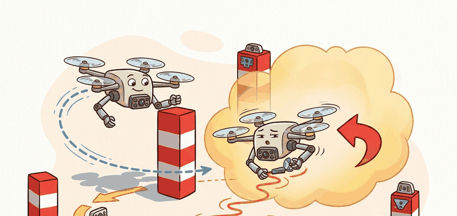

"An IMU never lies about acceleration and never tells the truth about position; estimation is the art of reconciling the two."
A Careful Control Loop

This section assumes familiarity with the cascaded control architecture from section 7.5 and with IMU measurement models introduced in section 8.3. The visual-inertial fusion ideas developed here feed directly into section 47.3, which shows how the same state estimate drives perception-aware navigation and obstacle avoidance. The underactuation constraint discussed below recurs in Part IX alongside manipulation contact models, where a similar coupling between degrees of freedom shapes controller design.
A quadrotor tilted five degrees is already committed: gravity will pull it sideways before any corrective motor command can propagate through the ESC (Electronic Speed Controller), rotor spin-up, and rigid-body response. That half-second window is where most crashes happen, and it is why every capable aerial AI must internalize the physics rather than merely react to sensor readings. Drones are now cheap enough to deploy at scale in warehouses, agriculture, and search-and-rescue, yet the gap between a simulated policy and a vehicle that holds altitude outdoors almost always traces back to misunderstood dynamics. Here you will build the force-and-torque model that underlies every controller in this chapter, learn to read the four failure signatures of underactuated flight, and connect the math directly to the state estimator you will implement in Section 47.3.
Everything below traces back to one of four observable signatures of underactuated flight: (1) tilt-lag oscillation, where the outer loop commands attitude changes faster than the inner loop can track, producing a growing wobble; (2) RPM saturation, where motors are pinned at their hardware limit and no corrective torque remains, so position error keeps growing while the plot still looks smooth; (3) quadratic dead-reckoning drift, where an uncorrected IMU bias integrates into runaway position error once visual updates are lost; and (4) feature starvation, where a texture-poor scene starves VIO of trackable landmarks and the estimator silently falls back to pure inertial integration. Each signature is demonstrated with a concrete example later in this section, and each maps to a distinct entry in the mechanism chain (motor command, thrust model, attitude estimate, angular-rate error, position error, controller saturation) introduced below.
Ask a drone to move ten centimeters to the left and it must first fall a little: there is no sideways thruster, so the only way to go left is to tilt, let gravity pull, and catch itself before the tilt becomes a tumble. That single fact is what separates flight dynamics intuition from a memorized label, and it defines the contract for this section: observe attitude, angular rates, thrust, drag, and inertia, command attitude or velocity through a stabilized controller, and judge the result with settling time, overshoot, and saturation.
For Flight dynamics intuition, check the earlier frame, control, and model chapters against the exact interface used here: state variables, timing budget, action limits, and evaluation panel.
Aerial agents pay for every bad decision immediately. They are underactuated, energy-limited, wind-sensitive, and often safety-critical. For Flight dynamics intuition, the decisive question is whether the loop can recover from the policy learns position control while hiding unstable attitude dynamics.
Figure 47.2.1 should be read as a flight-dynamics artifact map: motor model, rigid-body state, controller law, actuator limits, and logged residuals are separate boxes because each one can fail independently.
Before any math, consider what makes aerial dynamics different from wheeled or legged robots. Figure 47.2A captures the whole picture in one free-body diagram: lift, drag, and gravity act on the airframe, and motor RPM converts into the thrust and torques that produce linear and angular acceleration during a hover-and-tilt maneuver. A quadrotor is always falling. Four spinning rotors continuously oppose gravity, so any interruption in motor thrust causes immediate descent. The vehicle is also underactuated: it cannot translate sideways without first tilting, which couples position control to attitude control inseparably. This coupling is the gateway skill. A policy that learns to hover in simulation but never internalizes how tilt produces lateral force will oscillate, overshoot, or fall the moment it meets real aerodynamic disturbances. In practice, a flat end-to-end policy that tries to discover this coupling from reward alone typically needs on the order of tens of thousands of training episodes to reach stable hover, with the exact count depending heavily on reward shaping and simulator fidelity. A policy built on top of the cascaded controller, which takes the coupling as given, can converge in the hundreds of episodes in comparable setups, because it never has to rediscover a physical law from scratch. Everything that follows, from the state estimator to the controller cascade, exists to manage this instability reliably.
A common assumption is that a drone moves left or right directly, like a wheeled robot, with attitude (tilt) handled separately by a background stabilizer. That assumption is wrong. A quadrotor has no independent lateral thruster. To accelerate sideways, the vehicle tilts so that part of the rotor thrust points horizontally. Every position command is therefore also an attitude command. Position control and attitude control are the same problem running at two timescales: the outer loop decides how much to tilt, and the inner loop executes that tilt fast enough to produce the intended motion before gravity or wind intervenes. A controller that treats position and attitude as separate problems is not controlling a drone: it is negotiating with one.
Theory
A drone has no direct sensor for position. It carries an inertial measurement unit (IMU) that reports body-frame acceleration \(\mathbf a_m\) and angular rate \(\boldsymbol\omega_m\) at high rate (200 Hz to 1 kHz), plus a camera that observes the world at a lower rate (20 to 60 Hz). Visual-inertial odometry (VIO) fuses the two. The estimated state is
$$\mathbf x = [\,\mathbf p,\; \mathbf v,\; \mathbf q,\; \mathbf b_a,\; \mathbf b_g\,],$$
Why bias lives in the state
that is, position, velocity, orientation (as a quaternion \(\mathbf q\)), and the accelerometer and gyroscope biases \(\mathbf b_a, \mathbf b_g\). The biases are part of the state because they drift slowly with temperature and time, and an uncorrected bias integrates into runaway position error: a bias of just 0.05 m/s\(^2\) (barely above sensor noise) produces 2.5 cm of drift after one second and 2.5 m after ten, a 100-fold jump in error for a 10-fold increase in flight time.
Because that drift compounds so quickly, the estimator cannot integrate raw readings directly; it must first strip out the very biases and noise it is tracking. The IMU measurement model removes bias and noise before integration: \(\mathbf a = \mathbf a_m - \mathbf b_a - \mathbf n_a\) and \(\boldsymbol\omega = \boldsymbol\omega_m - \mathbf b_g - \mathbf n_g\). Integrating once gives velocity, twice gives position. Doing this naively between every camera frame is wasteful, so modern VIO uses IMU preintegration. The method precomputes the relative motion between two camera frames as a single pseudo-measurement, a delta in position, velocity, and rotation. That pseudo-measurement does not have to be recomputed when the linearization point changes (the linearization point is simply the current best-guess pose estimate that the optimizer perturbs on each iteration; it is explained mechanically in the next paragraph). This trick makes tightly coupled visual-inertial optimization run in real time.
Checkpoint
So far: raw IMU readings are debiased and denoised, integrated into position and velocity, and then bundled between camera frames into a single reusable pseudo-measurement so the estimator does not have to reintegrate from scratch every time it refines a pose.
Think of IMU preintegration like a road-trip odometer reading between two towns. Once you record that the leg from Austin to Dallas was 300 km and took 3 hours, you never need to retrace the entire drive to answer questions about that leg: the odometer snapshot is the answer. Preintegration does the same thing for the drone, collapsing thousands of high-frequency accelerometer and gyroscope samples into three compact tensors (delta position, delta velocity, delta rotation) for each camera-to-camera interval. When the optimizer later nudges a pose estimate, it reuses those tensors with a small correction rather than re-integrating every raw sample from scratch, keeping the computation constant regardless of how long the drone has been flying.
The mechanism: accumulate the relative motion between two keyframes once, storing three compact tensors (delta position, delta velocity, delta rotation). When the optimizer perturbs a linearization point, it reuses those tensors under a first-order Jacobian correction instead of reintegrating raw samples. Per-iteration cost drops from O(N IMU samples) to O(1) matrix multiplications, independent of window length.
There are two dominant architectures. Optimization-based VIO (VINS-Mono, ORB-SLAM3) keeps a sliding window of recent frames and solves a bundle-adjustment problem (a joint least-squares optimization over many camera poses and landmark positions at once, rather than filtering them one at a time) that jointly refines poses and landmark positions; it is accurate but heavier. The MSCKF (Multi-State Constraint Kalman Filter, used in OpenVINS) keeps a window of past camera poses in the filter state and marginalizes each landmark (folds that landmark's information into the filter's uncertainty estimate and then discards it, rather than keeping it around to re-optimize) after it leaves the field of view, giving filter-like constant-time updates with good accuracy. The choice is a compute-versus-accuracy trade, not a correctness one.
Whichever estimator you pick, its output is only half the story: a clean state estimate is worthless unless something downstream turns it into motor commands fast enough to matter, which is exactly the job of the controller cascade examined next.
The Cascaded Controller Architecture
State estimation feeds a cascaded controller, which is the standard flight-dynamics architecture used in PX4, ArduPilot, and most research platforms. The outer loop computes a desired acceleration from position and velocity error; the middle loop converts that acceleration into a desired attitude (roll, pitch, yaw); the inner loop runs at 1 kHz and drives motor RPM to track that attitude.
The cascade matters for embodied AI because the loops have very different bandwidths: the inner attitude loop must be 10 to 20 times faster than the outer position loop, or the position controller will command attitude changes faster than the vehicle can achieve them and the system goes unstable. Consider a specific case: a 500 g quadrotor with a 20 Hz position update from VIO and a 1 kHz attitude controller. If a learned policy bypasses the attitude loop and sends direct motor commands at 20 Hz, it is trying to control a 50 ms physical process with 50 ms stale observations, which leaves no margin for sensor latency, motor spin-up delay (typically 20 to 40 ms), or disturbance rejection. This is why "policy learns position control while hiding unstable attitude dynamics" is listed as the primary perturbation to test.
Algorithm: Cascaded Visual-Inertial Flight Control
Input: IMU stream \((\mathbf{a}_m, \boldsymbol{\omega}_m)\) at rate \(f_{\text{imu}}\), camera frames at rate \(f_{\text{cam}}\), desired position \(\mathbf{p}^* \in \mathbb{R}^3\), yaw reference \(\psi^*\)
Output: Motor thrust commands \(\boldsymbol{\tau} \in \mathbb{R}^4\), updated state estimate \(\hat{\mathbf{x}} = [\mathbf{p}, \mathbf{v}, \mathbf{q}, \mathbf{b}_a, \mathbf{b}_g]\)
- IMU preintegration: Between camera frames, integrate \(\mathbf{a} = \mathbf{a}_m - \mathbf{b}_a\) and \(\boldsymbol{\omega} = \boldsymbol{\omega}_m - \mathbf{b}_g\) to accumulate delta-position \(\Delta\mathbf{p}\), delta-velocity \(\Delta\mathbf{v}\), and delta-rotation \(\Delta\mathbf{q}\) as a single pseudo-measurement.
- Visual update: On each camera frame, extract and track feature correspondences; compute reprojection residuals (the gap between where the estimated state predicts a landmark should appear in the image and where the camera actually observed it) \(\mathbf{r} = \pi(\hat{\mathbf{x}}) - \mathbf{z}_{\text{cam}}\) where \(\pi(\cdot)\) is the projection function.
- State fusion: Run MSCKF or sliding-window bundle adjustment to jointly refine \(\hat{\mathbf{x}}\), correcting bias drift \(\mathbf{b}_a, \mathbf{b}_g\) so that position error stays bounded rather than growing as \(\tfrac{1}{2} b \, t^2\).
- Outer loop (position controller, \(\sim\)20 Hz): Compute position error \(\mathbf{e}_p = \mathbf{p}^* - \hat{\mathbf{p}}\) and velocity error \(\mathbf{e}_v = \mathbf{v}^* - \hat{\mathbf{v}}\); output desired acceleration \(\mathbf{a}^* = K_p \, \mathbf{e}_p + K_v \, \mathbf{e}_v\).
- Middle loop (attitude resolver): Convert \(\mathbf{a}^*\) to desired roll \(\phi^*\), pitch \(\theta^*\) via \(\tan\phi^* = a_y^*/g\) and \(\tan\theta^* = -a_x^*/g\); preserve commanded yaw \(\psi^*\) from the mission layer.
- Inner loop (attitude controller, \(\sim\)1 kHz): Compute attitude error quaternion \(\mathbf{q}_{\text{err}} = \mathbf{q}^{*-1} \otimes \hat{\mathbf{q}}\) and angular-rate error \(\boldsymbol{\omega}_{\text{err}} = \boldsymbol{\omega}^* - \hat{\boldsymbol{\omega}}\); compute torque commands \(\boldsymbol{\tau}_{\text{rot}} = K_q \, \mathbf{q}_{\text{err}} + K_\omega \, \boldsymbol{\omega}_{\text{err}}\).
- Thrust allocation: Combine collective thrust \(T = m(\|\mathbf{a}^*\| + g)\) with torque commands through the mixer matrix \(\boldsymbol{\Gamma}\) (the fixed matrix, set by rotor layout, that maps desired thrust and torques onto individual motor RPM values) to obtain per-motor RPM setpoints; clip to hardware limits \([\omega_{\min}, \omega_{\max}]\).
- Bandwidth check: Verify \(f_{\text{inner}} \geq 10 \times f_{\text{outer}}\); if violated, flag a saturation warning because the position loop is commanding attitude changes faster than the vehicle can track them.
- Log residuals: Record innovation magnitude \(\|\mathbf{r}\|\), tracked-feature count \(N_f\), RPM saturation flag, and position error \(\|\mathbf{e}_p\|\) together in one artifact for post-hoc fault attribution.
Step-Through: Cascaded Flight Control, One Cycle
Trace the cascade with concrete numbers for a 0.5 kg quadrotor (\(g = 9.81\) m/s\(^2\), \(K_p = 4\), \(K_v = 3\)). The drone is at \(\hat{\mathbf p} = (0.30, 0.00, 1.00)\) m and wants \(\mathbf p^* = (0.00, 0.00, 1.00)\) m, with \(\mathbf v^* = 0\) and current \(\hat{\mathbf v} = 0\). Outer loop: position error \(\mathbf e_p = \mathbf p^* - \hat{\mathbf p} = (-0.30, 0, 0)\) m, so desired horizontal acceleration \(a_x^* = K_p \, e_{p,x} + K_v \, e_{v,x} = 4(-0.30) + 0 = -1.2\) m/s\(^2\) (and \(a_y^* = 0\)). Middle loop: the resolver converts this to a pitch command via \(\tan\theta^* = -a_x^*/g = 1.2/9.81 = 0.1223\), giving \(\theta^* = 6.98^\circ\) nose-down so thrust tilts to pull the drone back toward \(x=0\); roll \(\phi^* = 0\). Inner loop: if the current pitch is \(\hat\theta = 2^\circ\), the attitude error is \(\approx 4.98^\circ\), and with \(K_q = 0.02\) the pitch-axis torque command is \(\boldsymbol\tau_{\text{rot}} \approx 0.02 \times (4.98 \times \pi/180) = 1.74 \times 10^{-3}\) N·m. Thrust allocation: collective thrust \(T = m(\|\mathbf a^*\| + g) = 0.5 \times (1.2 + 9.81) \approx 5.51\) N, split across four motors by the mixer plus the small pitch torque, then clipped to \([\omega_{\min}, \omega_{\max}]\). The 0.30 m position nudge has become four concrete RPM setpoints, with the inner loop running 50x faster than the outer to land the \(6.98^\circ\) tilt before gravity converts it into the wrong horizontal motion.
Real-World Application: PX4 multicopter autopilot
The PX4 flight stack, which runs on millions of consumer and industrial drones, implements exactly this cascade: an outer position controller (mc_pos_control) feeding a rate controller (mc_att_control) that closes at roughly 1 kHz on the gyro stream, with EKF2 (an extended Kalman filter, PX4's onboard state estimator that fuses noisy sensor streams into one best-guess trajectory) fusing IMU and visual or GPS data into the state estimate. PX4 enforces the bandwidth separation in firmware, which is why a misconfigured low rate-loop frequency on a Pixhawk board produces the exact oscillate-then-diverge signature described above.
When tuning the cascaded PID (Proportional-Integral-Derivative) controller in gym-pybullet-drones, set the attitude-loop gain KP_TOR first and only raise the position-loop gain KP_FOR after the roll/pitch step response settles within 50 ms. Increasing KP_FOR before the attitude loop is stable is the most common cause of simulation divergence, because the outer loop issues attitude commands faster than the inner loop can reject them. A quick diagnostic: log rpm_obs alongside pos_err; if RPMs saturate at the hardware limit (typically 24000 RPM for the default Crazyflie 2.1 model) while position error is still growing, the problem is attitude bandwidth, not the trajectory.
Flight dynamics failures should be traceable through motor command, thrust model, attitude estimate, angular-rate error, position error, and controller saturation. That chain distinguishes a weak controller from a bad mass estimate, poor motor calibration, delayed IMU stream, or impossible trajectory.
Worked Example
Integrate the IMU alone and the reason VIO needs the camera falls out of the arithmetic. Here a stationary drone reads a tiny constant accelerometer bias of 0.05 m/s\(^2\). We dead-reckon over 0.1 s at 100 Hz: integrate acceleration to velocity, then velocity to position, and watch the position error grow quadratically even though the vehicle never moved.
# IMU dead reckoning: integrate acceleration -> velocity -> position.
# A small uncorrected bias makes pure inertial position drift fast.
dt = 0.01 # 100 Hz IMU
steps = 10 # 0.1 s total
a_true = 0.0 # drone is stationary
a_bias = 0.05 # m/s^2, unmodeled accelerometer bias
pos, vel = 0.0, 0.0
for k in range(steps):
a_meas = a_true + a_bias # what the IMU reports
vel += a_meas * dt # integrate accel -> velocity
pos += vel * dt # integrate velocity -> position
print(f"after {steps*dt:.2f} s of dead reckoning:")
print(f" velocity error : {vel:.4f} m/s")
print(f" position error : {pos:.6f} m")
# Extrapolate the quadratic drift to 1 s and 10 s.
for T in (1.0, 10.0):
print(f" projected position drift at {T:>4.0f} s : {0.5*a_bias*T**2:.3f} m")Expected output: a velocity error that grows linearly and a position error that grows quadratically with time. The projected drift is the evidence field that matters: if your VIO loses camera tracking for even a few seconds, this is how far the estimate can wander before visual updates resume.
For Flight dynamics intuition, the hand-built record exposes the flight fields; PX4, ROS 2, MAVLink, gym-pybullet-drones, Aerial Gym, and safe-control-gym should preserve the same schema.
Practical Recipe
- Write the skill contract: observable variables, action interface, metric, allowed recovery actions, and stop conditions.
- Build the smallest baseline that can fail in an interpretable way.
- Run the maintained library version with the same inputs, scenarios, and metric code.
- Add one perturbation aimed at the expected failure: the policy learns position control while hiding unstable attitude dynamics.
- Save one artifact containing config, seeds, logs, summary metrics, and two representative traces.
VIO drift in feature-poor environments is the dominant failure. White walls, fog, darkness, water surfaces, and fast rotations all starve the camera of trackable features, so the estimator falls back toward pure IMU dead reckoning and the position drifts exactly as the worked example shows. The plot can still look smooth because the filter keeps reporting a confident pose; the tell is rising estimator covariance and shrinking feature count, not a visible jump. Monitor tracked-feature count and innovation magnitude, and trigger a hover-and-hold or descend-to-known-mat behavior before the drift accumulates into a wall.
In a warehouse inventory flight with a Crazyflie 2.1 (27 g, 92 mm motor-to-motor), a team logged per-frame tracked-feature count alongside RPM saturation flags and VIO innovation magnitude. During a pass over reflective shelving, tracked features dropped from 40 to 6, the MSCKF innovation spiked to 0.18 m (8x nominal), and the position estimate drifted 0.34 m over 3 s before a manual abort. Post-hoc replay showed the outer position loop was issuing pitch commands at 20 Hz while the attitude loop was saturated at max RPM (24000 for the stock Crazyflie motors), meaning no corrective torque was available: the vehicle was falling through a trajectory the inner loop could not track. Logging RPM saturation alongside position error immediately revealed the failure was attitude bandwidth, not the trajectory planner, cutting diagnosis time from days to minutes.
When flight dynamics intuition feels abstract, ask what would be different in the next frame of video, the next robot state, or the next safety margin.
Neural inertial-visual state estimation. Classical VIO pipelines assume a fixed camera-IMU calibration and Gaussian noise, but learned end-to-end estimators now close that gap. TLIO (Facebook Reality Labs, 2020) and its 2024 successors replace the IMU integration step with a network trained on pedestrian data; for aerial platforms, the Aero-DINO line (ETH Zurich, 2024) adapts DINOv2 features as drop-in landmark descriptors, cutting tracking failure rates on reflective surfaces by roughly 40 percent in indoor benchmark flights. The open question is how to bound estimation error formally when the feature extractor is a black box; a PhD student could attack this by deriving PAC-Bayes certificates (probabilistic bounds that guarantee an error stays below a threshold with high confidence, rather than only on average) on pose error conditioned on feature-match confidence, then verifying the certificate tightness on the ETH UZH-FPV dataset.
Physics-informed agile flight with foundation models. Large neural policies trained in massive simulation (CrazySwarm2 + Isaac Lab, 2024; Champion et al., Science Robotics 2023 for drone racing with reinforcement learning) now outpace human pilots on fixed tracks. The 2024 direction is generalizing to novel track geometry zero-shot by conditioning the policy on a scene graph rather than per-obstacle features. The DreamFly project (CMU, 2025 preprint) uses a video diffusion prior to augment sparse real flight data, achieving sim-to-real transfer for aggressive flips in under 20 real-world rollouts. Open problem: current agile policies treat aerodynamics as a residual to be absorbed by the controller, but rotor-wake interference between two drones flying within 1 m of each other is not modeled. A PhD student could instrument two Crazyflie 2.1 units with downwash-sensitive pressure taps and build a data-driven interference model suitable for embedding in a multi-agent planner.
Aerial manipulation and contact-aware dynamics. Quadrotors that carry a manipulator arm must re-estimate their own inertia tensor in real time as the arm moves, because the center of mass shift destabilizes the inner attitude loop. The ODAR platform (2023) and follow-on work at TU Delft (2024) use online system identification via recursive least squares on motor RPM residuals to track inertia changes at 100 Hz without offline calibration. An open PhD-scale problem is extending this to soft or cable-suspended payloads, where the effective inertia tensor is not constant but depends on payload oscillation frequency, requiring a coupled pendulum-quadrotor model that can be identified online without adding sensors to the payload.
Can you name the observation, state estimate, action, success metric, and most likely failure mode for flight dynamics intuition? If not, the system boundary is still too vague.
Flight dynamics intuition becomes robust when the chapter separates three claims. The conceptual claim explains why the skill should work. The systems claim explains which interface changes. The evidence claim records which same-panel metric would convince a skeptical builder.
For Flight dynamics intuition, keep flight physics, airspace constraint, battery state, timing, wind, and safety monitor inside the evidence artifact rather than in a post-run explanation.
| Tool or Library | Role in the Topic | Builder Advice |
|---|---|---|
| gym-pybullet-drones and PX4 SITL | Main practical route for Flight dynamics intuition | Use it after the baseline contract is explicit and keep the same artifact schema. |
| ROS 2 logs | Interface and timing evidence | Record observations, commands, controller status, and verifier events together. |
| Same-panel evaluation script | Construct-matched comparison | Compare methods only when metrics are co-computed on one scenario panel. |
For Flight dynamics intuition, the coordinate-frame link is operational: every artifact should name frame, timestamp, units, safety constraint, and the downstream evaluator that will consume it.
Create one scenario for Flight dynamics intuition, run the baseline and the gym-pybullet-drones and PX4 SITL route on the same inputs, then label each failure as perception, state, planning, control, timing, data coverage, or evaluation.
When Flight dynamics intuition fails, do not collapse the whole method into one score. Assign the failure to a subsystem, rerun one perturbation that isolates the suspected cause, and keep the trace as a reusable diagnostic case.
Section References
Qin, Li, and Shen (2018), "VINS-Mono: A Robust and Versatile Monocular Visual-Inertial State Estimator," IEEE T-RO; Geneva et al. (2020), "OpenVINS: A Research Platform for Visual-Inertial Estimation," ICRA; Mourikis and Roumeliotis (2007), "A Multi-State Constraint Kalman Filter for Vision-Aided Inertial Navigation," ICRA (MSCKF); Forster et al. (2017), "On-Manifold Preintegration for Real-Time Visual-Inertial Odometry," IEEE T-RO; Mellinger and Kumar (2011), "Minimum Snap Trajectory Generation and Control for Quadrotors," ICRA (cascaded differential-flatness control); Panerati et al. (2021), "Learning to Fly: gym-pybullet-drones," IROS; Meier, Honegger, and Pollefeys (2015), "PX4: A Node-Based Multithreaded Open Source Robotics Framework," ICRA.
VINS-Mono and OpenVINS are the two reference VIO stacks named in the text; Forster et al. is the canonical IMU-preintegration derivation; Mellinger and Kumar establishes the differential-flatness basis for the position-attitude-thrust cascade; gym-pybullet-drones and PX4 are the simulation and flight-stack routes used in the Practical Recipe.
Flight dynamics intuition is useful when it makes the perception-action loop more reliable, not when it merely adds a more impressive model name.
Design a same-panel experiment for Flight dynamics intuition. Specify the scenario set, the baseline, the gym-pybullet-drones and PX4 SITL library route, the metric computation, and one perturbation that targets this failure: the policy learns position control while hiding unstable attitude dynamics.
Project Ideas
Beginner (weekend): IMU bias drift visualizer in PyBullet. Build a hovering Crazyflie model in gym-pybullet-drones that logs raw IMU readings alongside estimated position, then inject a configurable accelerometer bias and plot how position error grows quadratically over time. The key challenge is isolating the bias contribution from sensor noise so the quadratic drift curve is clean enough to match the analytical prediction \(\frac{1}{2} b t^2\).
Intermediate (1-2 weeks): cascaded PID tuner with attitude bandwidth guard. Using gym-pybullet-drones and a Gymnasium wrapper, implement the three-loop cascade (inner attitude at 1 kHz, outer position at 20 Hz) and write an automated sweep that raises the position-loop gain KP_FOR in steps, detecting RPM saturation via the logged rpm_obs field and halting before the system diverges. The key challenge is keeping the bandwidth-ratio check (\(f_{\text{inner}} \geq 10 \times f_{\text{outer}}\)) enforced in real time so the tuner never commands attitude changes faster than the inner loop can execute them.
Intermediate (1-2 weeks): VIO feature-starvation detector with ROS 2. Run OpenVINS inside a ROS 2 node on a recorded indoor bag that includes a pass over a reflective surface, monitor the tracked-feature count and MSCKF innovation magnitude on separate topics, and trigger a "hover and hold" behavior when features drop below a threshold, logging the position drift saved versus a naive policy that ignores the signal. The key challenge is choosing a threshold that fires early enough to arrest drift without triggering false holds in legitimately texture-poor corridors.